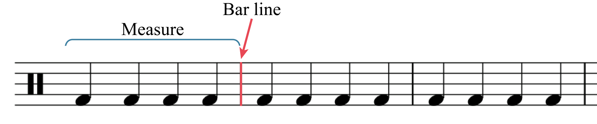
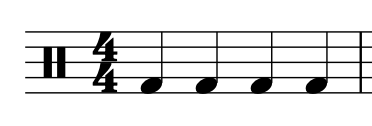
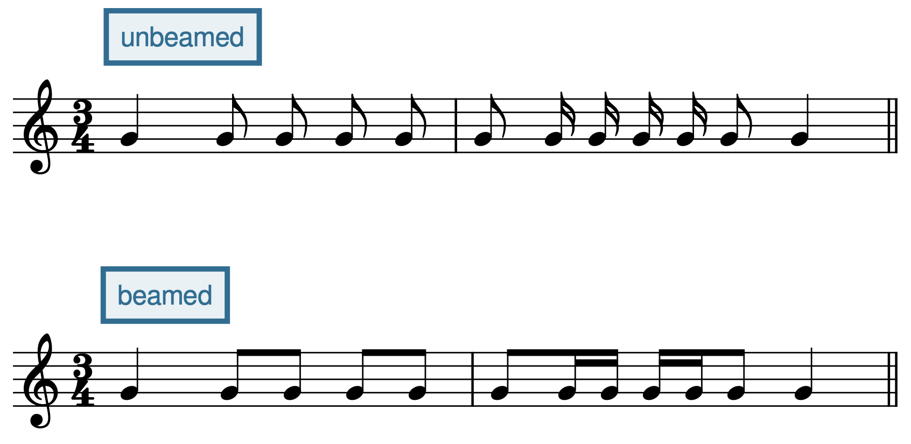
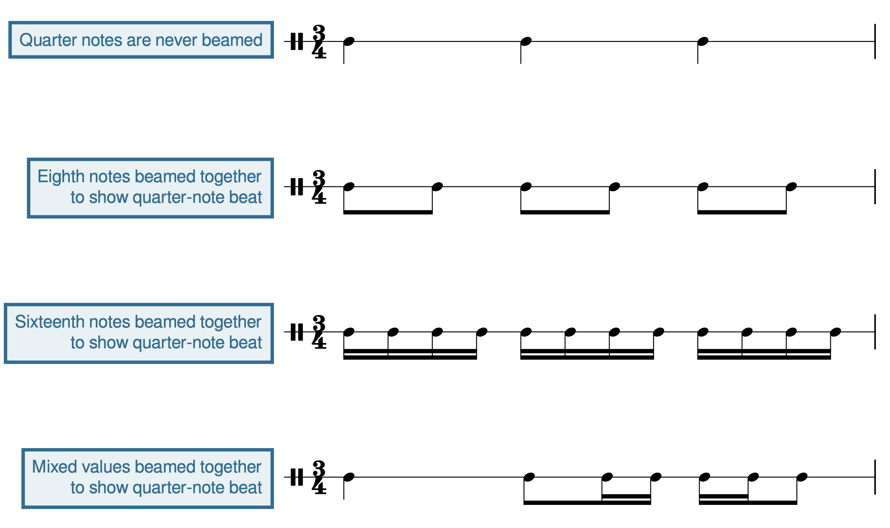
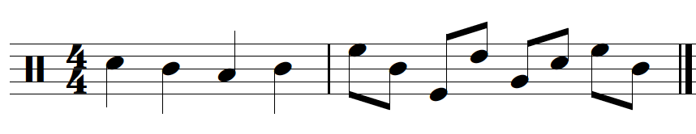
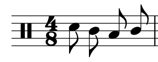
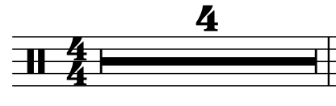

Open Music Theory：繁體中文版
單拍子與拍號
查看英文原文
Key Takeaways
- A beat is a pulse in music that regularly recurs.
- Simple meters are meters in which the beat divides into two, and then further subdivides into four.
- Duple meters have groupings of two beats, triple meters have groupings of three beats, and quadruple meters have groupings of four beats.
- There are different conducting patterns for duple, triple, and quadruple meters.
- A measure is equivalent to one group of beats (duple, triple, or quadruple). Measures are separated by bar lines.
- Time signatures in simple meters express two things: how many beats are contained in each measure (the top number), and the beat unit (the bottom number), which refers to the note value that is the beat.
- A beam visually connects notes together, grouping them by beat. Beaming changes in different time signatures.
- Notes below the middle line on a staff are up-stemmed, while notes above the middle line on a staff are down-stemmed. Flag direction works similarly.
In Notating Rhythm, we discussed the different rhythmic values of notes and rests. Musicians organize rhythmic values into various meters, which are—broadly speaking—formed as the result of recurrent patterns of accents in musical performances.
請聆聽當代音樂團體 Postmodern Jukebox 的下列演出，見例 1。他們翻唱辣妹合唱團原於 1996 年推出的〈Wannabe〉。從 0:11 開始，很容易跟著錄音輕敲或拍手。你跟著敲出的就是拍，也就是音樂中規律反覆出現的脈動。
例 1。Postmodern Jukebox 翻唱的〈Wannabe〉；請從 0:11 開始聆聽。
查看英文原文
Terminology
Listen to the following performance by the contemporary musical group Postmodern Jukebox ( Example 1). They are performing a cover of the song "Wannabe" by the Spice Girls (originally released in 1996). Beginning at 0:11, it is easy to tap or clap along to this recording. What you are tapping along to is called a beat—a pulse in music that regularly recurs.
Example 1. A cover of "Wannabe" performed by Postmodern Jukebox; listen starting at 0:11.
Example 1 is in a simple meter: a meter in which the beat divides into two, and then further subdivides into four. You can feel this yourself by tapping your beat twice as fast; you might also think of this as dividing your beat into two smaller beats.
Different numbers of beats group into different meters. Duple meters contain beats that are grouped into twos, while triple meters contain beats that are grouped into threes, and quadruple meters contain beats that are grouped into fours.
接著聆聽單二拍子、單三拍子與單四拍子的例子。單二拍子每組有兩拍，每拍可分成兩等分，再細分成四等分。約翰・菲利普・蘇沙創作的〈星條旗永不落〉（1896）就是單二拍子。
請聆聽例 2並跟著敲拍，感受兩拍一組的規律：
例 2。Dallas Winds 演奏的〈星條旗永不落〉。
譯註來源：國際莫札特基金會：KV 2 官方作品目錄
例 3。Alan Huckleberry 演奏莫札特〈F 大調小步舞曲〉。
例 4。Beyoncé 的〈Formation〉；請從 2:24 開始聆聽。
透過聆聽與敲拍，你可以感受到各種風格的作品都受拍節組織。試著辨認自己喜愛的歌曲或樂曲屬於單二拍子、單三拍子還是單四拍子；仔細聽並跟著敲拍，是最好的練習方法。注意，單四拍子與單二拍子的感覺相近，因為四拍可分為兩組二拍。只憑聆聽，不一定能立刻判斷作品究竟是單二拍子還是單四拍子。
查看英文原文
Listening to Simple Meters
Let's listen to examples of simple duple, simple triple, and simple quadruple meters. A simple duple meter contains two beats, each of which divides into two (and further subdivides into four). "The Stars and Stripes Forever" (1896), written by John Philip Sousa, is in a simple duple meter.
Listen to Example 2, and tap along, feeling how the beats group into sets of two:
Example 2. "The Stars and Stripes Forever" played by the Dallas Winds.
A simple triple meter contains three beats, each of which divides into two (and further subdivides into four). Wolfgang Amadeus Mozart's "Minuet in F major," K.2 (1774) is in a simple triple meter. Listen to Example 3, and tap along, feeling how the beats group into sets of three:
Example 3. Mozart's "Minuet in F major," played by Alan Huckleberry.
Finally, a simple quadruple meter contains four beats, each of which divides into two (and further subdivides into four). The song "Formation" (2016) by Beyonce is in a simple quadruple meter. Listen to Example 4 starting at 2:24 and tap along, feeling how the beats group into sets of four:
Example 4. "Formation" by Beyonce; listen starting at 2:24.
As you can hear and feel (by tapping along), musical compositions in a wide variety of styles are governed by meter. You might practice identifying the meters of some of your favorite songs or musical compositions as simple duple, simple triple, or simple quadruple; listening carefully and tapping along is the best way to do this. Note that simple quadruple meters feel similar to simple duple meters, since four beats can be divided into two groups of two beats. It may not always be immediately apparent if a work is in a simple duple or simple quadruple meter by listening alone.
如果曾在合唱團唱歌，或參與管樂團、管弦樂團，你大概接觸過指揮。指揮的工作很多，其中之一是為團員打出指揮拍型。拍型主要有兩個作用：建立速度，以及建立拍節。
最常見的三種指揮拍型分別描繪二拍子、三拍子與四拍子。二拍子先向下並向外移動（第 1 拍），再向上（第 2 拍），如例 5。三拍子依序向下（第 1 拍）、向外（第 2 拍）、向上（第 3 拍），如例 6。四拍子依序向下（第 1 拍）、向內（第 2 拍）、向外（第 3 拍）、向上（第 4 拍），如例 7：
- 例 5。 二拍子的指揮拍型。
- 例 6。 三拍子的指揮拍型。
- 例 7。 四拍子的指揮拍型。
這些小節的第 1 拍稱為下拍（downbeat）。指揮以下行動作打出下拍，你也許會感受到它比其他拍更有「重量」或更「沉」。上拍（upbeat）則是每小節的最後一拍，以向上動作打出，聽起來或感覺上帶有預備下一拍的性質。
查看英文原文
Conducting Patterns
If you have ever sung in a choir or played an instrument in a band or orchestra, then you have likely had experience with a conductor. Conductors have many jobs. One of these jobs is to provide conducting patterns for the musicians in their choir, band, or orchestra. Conducting patterns serve two main purposes: first, they establish a tempo, and second, they establish a meter.
The three most common conducting patterns outline duple, triple, and quadruple meters. Duple meters are conducted with a downward/outward motion (step 1), followed by an upward motion (step 2), as seen in Example 5. Triple meters are conducted with a downward motion (step 1), an outward motion (step 2), and an upward motion (step 3), as seen in Example 6. Quadruple meters are conducted with a downward motion (step 1), an inward motion (step 2), an outward motion (step 3), and an upward motion (step 4), as seen in Example 7:
- Example 5. A duple conducting pattern.
- Example 6. A triple conducting pattern.
- Example 7. A quadruple conducting pattern.
Beat 1 of each of these measures is considered a downbeat . A downbeat is conducted with a downward motion, and you may hear and feel that it has more "weight" or "heaviness" then the other beats. An upbeat is the last beat of any measure. Upbeats are conducted with an upward motion, and you may feel and hear that they are anticipatory in nature.
西方記譜法用小節線標示二拍、三拍、四拍等分組，把音樂分為小節；英文小節可稱 measure 或 bar，如例 8。每小節相當於一組拍子。

- Measure：小節；
- Bar line：小節線。
在單拍子中，拍號（time signature，亦稱 meter signature）表示兩件事：一是每小節有幾拍，二是哪種音符時值作為一拍的單位。拍號由上下排列的兩個數字構成，放在譜號之後，見例 9。

拍號雖然看起來像分數，卻不是分數；請注意兩個數字中間沒有橫線。單拍子中，上方數字表示每小節拍數，下方數字表示一拍的單位。
單拍子的上方數字一律為 2、3 或 4，分別對應二拍子、三拍子或四拍子的拍點模式。下方數字通常是：
- 2：以二分音符為一拍。
- 4：以四分音符為一拍。
- 8：以八分音符為一拍。
單拍子拍號的下方數字也可能是 16，表示十六分音符為一拍；或是 1，表示全音符為一拍。
單拍子還有兩種拍號符號：𝄴（common time）及 𝄵（cut time）。前者等同 [latex]\mathbf{^4_4}[/latex]，也就是每小節四拍的單四拍子；後者等同 [latex]\mathbf{^2_2}[/latex]，也就是每小節兩拍的單二拍子。
你可以利用下列練習，將單拍子拍號分類：
查看英文原文
Time Signatures
In Western musical notation, beat groupings (duple, triple, quadruple, etc.) are shown using bar lines, which separate music into measures (also called bars), as shown in Example 8. Each measure is equivalent to one beat grouping.
In simple meters, time signatures (also called meter signatures) express two things: 1) how many beats are contained in each measure, and 2) the beat unit (which note value gets the beat). Time signatures are expressed by two numbers, one above the other, placed after the clef (Example 9).
A time signature is not a fraction, though it may look like one; note that there is no line between the two numbers. In simple meters, the top number of a time signature represents the number of beats in each measure, while the bottom number represents the beat unit.
In simple meters, the top number is always 2, 3, or 4, corresponding to duple, triple, or quadruple beat patterns. The bottom number is usually one of the following:
- 2, which means the half note gets the beat.
- 4, which means the quarter note gets the beat.
- 8, which means the eighth note gets the beat.
You may also see the bottom number 16 (the sixteenth note gets the beat) or 1 (the whole note gets the beat) in simple meter time signatures.
There are two additional simple meter time signatures, which are 𝄴 (common time) and 𝄵 (cut time). Common time is the equivalent of [latex]\mathbf{^4_4}[/latex] (simple quadruple—four beats per measure), while cut time is the equivalent of [latex]\mathbf{^2_2}[/latex] (simple duple—two beats per measure).
You can practice categorizing simple meter time signatures in the following exercise:
大聲數出節奏對演出很重要；無論歌者或器樂演奏者，都必須能實現西方記譜法所寫的節奏。建議一面數拍、一面打指揮拍型，幫助維持穩定速度。請注意，老師可能使用不同數拍系統。Open Music Theory 採美式傳統數拍，但這不是唯一方法。
例 10呈現 [latex]\mathbf{^4_4}[/latex] 拍號下的節奏，屬於單四拍子。上方的 4 表示每小節有四拍，下方的 4 則表示四分音符為一拍。
- 每小節中的每個四分音符各數一拍，以阿拉伯數字表示：「1、2、3、4」。
- 音符超過一拍時，例如本例中的二分或全音符，數拍的聲音會延續數拍；沒有另外大聲數出的拍，以括號表示。
- 單拍子將一拍分成兩份時，以 and 數出第二份，通常記作加號（+）。所以，若四分音符為一拍，每拍中的第二個八分音符就數 and。
- 再細分到十六分音符層次時，加入 e（長母音，像 see 的母音）與 a（發音像 uh）。若再細分到三十二分音符，則在先前每兩個數拍音節之間加入 ta。
例 10。4/4 拍的節奏。
單二拍子每組只有兩拍，單三拍子每組只有三拍，但拍內細分的數法相同，見例 11。
例 11。單二拍子每小節兩拍，單三拍子每小節三拍。
和持續兩拍以上的音符一樣，因休止符、延音線或附點而沒有起音的拍，也不另外大聲數出。這些拍通常以括號標記，如例 12：
例 12。不大聲數出的拍放在括號內。
{kind=link}
如果範例以弱起音，也就是弱起（anacrusis）開頭，數拍就不是從「1」開始，如例 13。弱起音應視為一個想像小節的最後幾個音來數。作品以弱起開始時，最後一小節通常會減去與弱起相等的時值。例 13示範這件事：弱起長一個四分音符，因此最後一小節只有三拍，也就是少了一個四分音符。
查看英文原文
Counting in Simple Meter
Counting rhythms aloud is important for musical performance; as a singer or instrumentalist, you must be able to perform rhythms that are written in Western musical notation. Conducting while counting rhythms is highly recommended and will help you to keep a steady tempo. Please note that your instructor may employ a different counting system. Open Music Theory privileges American traditional counting, but this is not the only method.
Example 10 shows a rhythm in a [latex]\mathbf{^4_4}[/latex] time signature, which is a simple quadruple meter. This time signature means that there are four beats per measure (the top 4) and that the quarter note gets the beat (the bottom 4).
- In each measure, each quarter note gets a count, expressed with Arabic numerals—"1, 2, 3, 4."
- When notes last longer than one beat (such as a half or whole note in this example), the count is held over multiple beats. Beats that are not counted out loud are written in parentheses.
- When the beat in a simple meter is divided into two, the divisions are counted aloud with the syllable “and,” which is usually notated with the plus sign (+). So, if the quarter note gets the beat, the second eighth note in each beat would be counted as “and.”
- Further subdivisions at the sixteenth-note level are counted as “e” (pronounced as a long vowel, as in the word “see”) and “a” (pronounced “uh”). At the thirty-second-note level, further subdivisions add the syllable “ta” in between each of the previous syllables.
Example 10. Rhythm in 4/4 time.
Simple duple meters have only two beats and simple triple meters have only three, but the subdivisions are counted the same way (Example 11).
Example 11. Simple duple meters have two beats per measure; simple triple meters have three.
Like with notes that last for two or more beats, beats that are not articulated because of rests, ties, and dots are also not counted out loud. These beats are usually written in parentheses, as shown in Example 12:
Example 12. Beats that are not counted out loud are put in parentheses.
When an example begins with a pickup note (anacrusis), your count will not begin on "1," as shown in Example 13. An anacrusis is counted as the last note(s) of an imaginary measure. When a work begins with an anacrusis, the last measure is usually shortened by the length of the anacrusis. This is demonstrated in Example 13: the anacrusis is one quarter note in length, so the last measure is only three beats long (i.e., it is missing one quarter note).
單拍子若採用其他一拍單位，也就是拍號下方數字不同，拍點與細分的數法仍然相同，但會對應不同音符時值。例 14先以 [latex]\mathbf{^4_4}[/latex] 寫出一個節奏，再用其他一拍單位寫出相同節奏。各例聽起來相同，數法也相同，而且都屬於單四拍子。差別只在拍號下方數字：分別以四分、二分、八分或十六分音符為一拍。
例 14。相同數拍節奏的四種記法：（a）四分音符一拍、（b）二分音符一拍、（c）八分音符一拍、（d）十六分音符一拍。
查看英文原文
Counting with Beat Units of 2, 8, and 16
In simple meters with other beat units (shown in the bottom number of the time signature), the same counting patterns are used for the beats and subdivisions, but they correspond to different note values. Example 14 shows a rhythm with a [latex]\mathbf{^4_4}[/latex] time signature, followed by the same rhythms with different beat units. Each of these rhythms sounds the same and is counted the same. They are also all considered simple quadruple meters. The difference in each example is the bottom number of the time signature—which note gets the beat unit (quarter, half, eighth, or sixteenth).
Example 14. The same counted rhythm, as written in a meter with (a) a quarter-note beat, (b) a half-note beat, (c) an eighth-note beat, and (d) a sixteenth-note beat.
符槓依拍子將音符連在一起。這表示符槓分組會隨拍號改變，如例 15。第一小節的十六分音符以四個一組連接，因為在 [latex]\mathbf{^4_4}[/latex] 中，四個十六分音符等於一拍；第二小節則以兩個一組，因為 [latex]\mathbf{^4_8}[/latex] 的一拍只等於兩個十六分音符。
例 15。兩種不同拍節的符槓分組。
{kind=link}

- Unbeamed：未以符槓分組；
- Beamed：已以符槓分組。
請注意，聲樂譜有時只用符槓連接同一歌詞音節上的音。如果你習慣閱讀不加符槓的樂譜，在掌握分組慣例之前，可能需要特別留意。例 16上行的八分音符沒有以符槓分組，因此不容易看出三拍子中第 2、3 拍從哪裡開始。下行將同一拍內的音符用符槓連成一組，樂譜就容易讀得多。這兩種記法雖然符槓不同，聽起來卻相同。將事件依層級分組，是人類知覺的重要能力；拍節結構提供了層級，符槓等記譜工具將它呈現出來，因此有助於我們從視覺上解析節奏。
例 17將幾種不同時值以符槓連接，呈現一拍的單位。第一行不需要符槓，因為四分音符不用符槓連接；其後各行則需要符槓，使拍點清楚。
{kind=link}

Quarter notes are never beamed：四分音符不加符槓。
其餘三列依序是八分音符、十六分音符與混合時值，以符槓呈現四分音符一拍的單位。
你可以利用下列練習，藉由符槓分組判斷單拍子的類型：

例 18第二小節顯示，一組以符槓相連的音符，符幹方向由離第三線最遠的音決定。第二小節第 1 拍中，該音是第三線上方的 E5，因此符幹朝下；第 2 拍則因離第三線最遠的是下方的 E4，所以符幹朝上。

符尾配置由符幹方向決定，見例 19。第三線以上的音符，符幹在左側朝下，符尾朝內，也就是向右；第三線以下的音符，符幹在右側朝上，符尾朝外，也就是向左。第三線上的音符可採任一種符尾配置，通常依旋律線的輪廓而定。
例 20。部分符槓用於某些混合時值的節奏分組。

持續數個完整小節的休止，有時會使用例 21的記法。此例表示音樂家須休止完整的四小節。
查看英文原文
Beaming, Stems, Flags, and Multi-Measure Rests
Beams connect notes together by beat. As Example 15 shows, this means that beaming changes depending on the time signature. In the first measure, sixteenth notes are grouped into sets of four, because four sixteenth notes in a [latex]\mathbf{^4_4}[/latex] time signature are equivalent to one beat. In the second measure, however, sixteenth notes are grouped into sets of two, because one beat in a [latex]\mathbf{^4_8}[/latex] time signature is only equivalent to two sixteenth notes.
Example 15. Beaming in two different meters.
Note that in vocal music, beaming is sometimes only used to connect notes sung on the same syllable. If you are accustomed to music without beaming, you may need to pay special attention to beaming conventions until you have mastered them. In the top staff of Example 16, the eighth notes are not grouped with beams, making it difficult to see where beats 2 and 3 in the triple meter begin. The bottom staff shows that if we re-notate the rhythm so that the notes that fall within the same beat are grouped together with a beam, it makes the music much easier to read. Note that these two rhythms sound the same, even though they are beamed differently. The ability to group events according to a hierarchy is an important part of human perception, which is why beaming helps us visually parse notated musical rhythms—the metrical structure provides a hierarchy that we show using notational tools like beaming.
Example 17 shows several different note values beamed together to show the beat unit. The first line does not require beams because quarter notes are never beamed, but all subsequent lines do need beams to clarify beats.
You can practice categorizing simple meters in the following exercise, using the beaming to help you:
The second measure of Example 18 shows that when notes are grouped together with beams, the stem direction is determined by the note farthest from the middle line. On beat 1 of measure 2, this note is E5, which is above the middle line, so down-stems are used. Beat 2 uses up-stems because the note farthest from the middle line is the E4 below it.
Flagging is determined by stem direction (Example 19). Notes above the middle line receive a down-stem (on the left) and an inward-facing flag (facing right). Notes below the middle line receive an up-stem (on the right) and an outward-facing flag (facing left). Notes on the middle line can be flagged in either direction, usually depending on the contour of the musical line.
Partial beams can be used for mixed rhythmic groupings, as shown in Example 20. Sometimes these beaming conventions look strange to students who have had less experience with reading beamed music. If this is the case, you will want to pay special attention to how the notes in Example 20 are beamed.
Example 20. Partial beams are used for some mixed rhythmic groupings.
Rests that last for multiple full measures are sometimes notated as seen in Example 21. This example indicates that the musician is to rest for a duration of four full measures.
我們已看過延音線如何將音延長到小節線之後；它也能像符槓一樣，使小節內的拍節結構更清楚。例 22第一小節的第 2 拍從一個八分音符的中間開始，因此不容易看出拍節結構。第二小節把該八分音符拆成兩個以延音線連接的十六分音符，就清楚顯示了第 2 拍的起點。
{kind=link}
Hard to read: Beat units unclear：難讀，拍的單位不清楚。
Easier to read: Ties clarify the beat：較易讀，延音線使拍點清楚。
- Bent, Ian D. 等人。2001。〈記譜法〉（“Notation”）。Grove Music Online。https://doi.org/10.1093/gmo/9781561592630.article.20114。
- Bowen, José Antonio。2003。《劍橋指揮指南》（The Cambridge Companion to Conducting）。劍橋：Cambridge University Press。
- Gerou, Tom 與 Linda Lusk。1996。《記譜法必備辭典》（Essential Dictionary of Music Notation）。洛杉磯：Alfred。
- Gould, Elaine。2011。《Behind Bars：記譜法權威指南》（Behind Bars: the Definitive Guide to Music Notation）。倫敦：Faber Music。
- Labuta, Joseph A. 與 Wendy K. Matthews。2023。《基礎指揮技巧》（Basic Conducting Techniques），第 8 版。紐約：Routledge。
- London, Justin。2001。〈拍節〉（“Metre”）。Grove Music Online。https://doi.org/10.1093/gmo/9781561592630.article.18519。
- McGrain, Mark。1986。《記譜法》（Music Notation）。波士頓：Berklee Press。
- Roemer, Clinton。1985。《抄譜的藝術：演奏用樂譜的準備》（The Art of Music Copying: The Preparation of Music for Performance），第二版。Sherman Oaks：Roerick Music Company。
- Spitzer, John 等人。2021。〈指揮〉（“Conducting”）。Grove Music Online。https://doi.org/10.1093/gmo/9781561592630.article.06266。
媒體素材署名
- 小節與小節線，© Nathaniel Mitchell，採用 CC BY-SA（姓名標示－相同方式分享）授權。
- 拍號，© Chelsey Hamm，採用 CC BY-SA（姓名標示－相同方式分享）授權。
- 弱起音，© Megan Lavengood，採用 CC BY-SA（姓名標示－相同方式分享）授權。
- 沒有符槓的音符，© Mark Gotham，採用 CC BY-SA（姓名標示－相同方式分享）授權。
- 以符槓呈現一拍單位，© Megan Lavengood，採用 CC BY-SA（姓名標示－相同方式分享）授權。
- 符幹方向，© Chelsey Hamm，採用 CC BY-SA（姓名標示－相同方式分享）授權。
- 符尾方向，© Chelsey Hamm，採用 CC BY-SA（姓名標示－相同方式分享）授權。
- 多小節休止符，© Chelsey Hamm，採用 CC BY-SA（姓名標示－相同方式分享）授權。
- 延音線釐清拍點，© Mark Gotham，採用 CC BY-SA（姓名標示－相同方式分享）授權。
查看英文原文
A Note on Ties
We have already encountered ties that can be used to extend a note over a measure line. But ties can also be used like beams to clarify the metrical structure within a measure. In the first measure of Example 22, beat 2 begins in the middle of the eighth note, making it difficult to see the metrical structure. Breaking the eighth note into two sixteenth notes connected by a tie, as shown in the second measure, clearly shows the beginning of beat 2.
- Bent, Ian D. et al. 2001. “Notation.” Grove Music Online. https://doi.org/10.1093/gmo/9781561592630.article.20114.
- Bowen, José Antonio. 2003. The Cambridge Companion to Conducting. Cambridge: Cambridge University Press.
- Gerou, Tom and Linda Lusk. 1996. Essential Dictionary of Music Notation. Los Angeles: Alfred.
- Gould, Elaine. 2011. Behind Bars: the Definitive Guide to Music Notation. London: Faber Music.
- Labuta, Joseph A. and Wendy K. Matthews. 2023. Basic Conducting Techniques, 8th edition. New York: Routledge.
- London, Justin. 2001. "Metre." Grove Music Online. https://doi.org/10.1093/gmo/9781561592630.article.18519.
- McGrain, Mark. 1986. Music Notation. Boston: Berklee Press.
- Roemer, Clinton. 1985. The Art of Music Copying: The Preparation of Music for Performance, 2nd edition. Sherman Oaks: Roerick Music Company
- Spitzer, John et al. 2021. "Conducting." Grove Music Online. https://doi.org/10.1093/gmo/9781561592630.article.06266.
- Simple Meter Tutorial (musictheory.net)
- Video Tutorial on Simple Meter, Beats, and Beaming (YouTube)
- Conducting Patterns (YouTube)
- Simple Meter Time Signatures (liveabout.com)
- Simple Meter Counting (YouTube)
- Beaming Rules (Music Notes Now)
- Beaming Examples (Dr. Sebastian Anthony Birch)
- Time Signatures and Rhythms (.pdf)
- Terminology, Bar Lines, Fill-in-rhythms, Rebeaming (.pdf)
- Meters, Time Signatures, Rebeaming (website)
- Bar Lines, Time Signatures, Counting (.pdf)
- Time Signatures, Rebeaming, p. 4 (.pdf)
- Simple Notes, Rests, and Bar Lines (.pdf, .docx). Asks students to insert the correct notes, rests, and bar lines to complete the rhythmic example.
- Notating Rhythm in Simple Meter (.pdf, .mscz). Asks students to correct notation that does not reflect the underlying simple meter.
Media Attributions
- Measures and Bar Lines © Nathaniel Mitchell is licensed under a CC BY-SA (Attribution ShareAlike) license
- Time Signature © Chelsey Hamm is licensed under a CC BY-SA (Attribution ShareAlike) license
- Pickup Notes © Megan Lavengood is licensed under a CC BY-SA (Attribution ShareAlike) license
- Notes Without Beams © Mark Gotham is licensed under a CC BY-SA (Attribution ShareAlike) license
- Beaming Beat Unit © Megan Lavengood is licensed under a CC BY-SA (Attribution ShareAlike) license
- Stemming © Chelsey Hamm is licensed under a CC BY-SA (Attribution ShareAlike) license
- Flag Direction © Chelsey Hamm is licensed under a CC BY-SA (Attribution ShareAlike) license
- Multi-Measure Rest © Chelsey Hamm is licensed under a CC BY-SA (Attribution ShareAlike) license
- Ties Clarify Beat © Mark Gotham is licensed under a CC BY-SA (Attribution ShareAlike) license